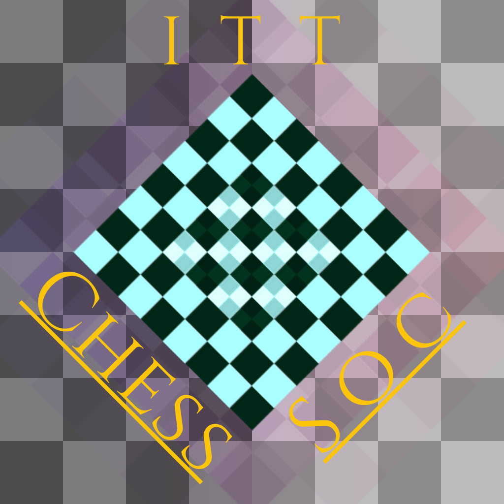
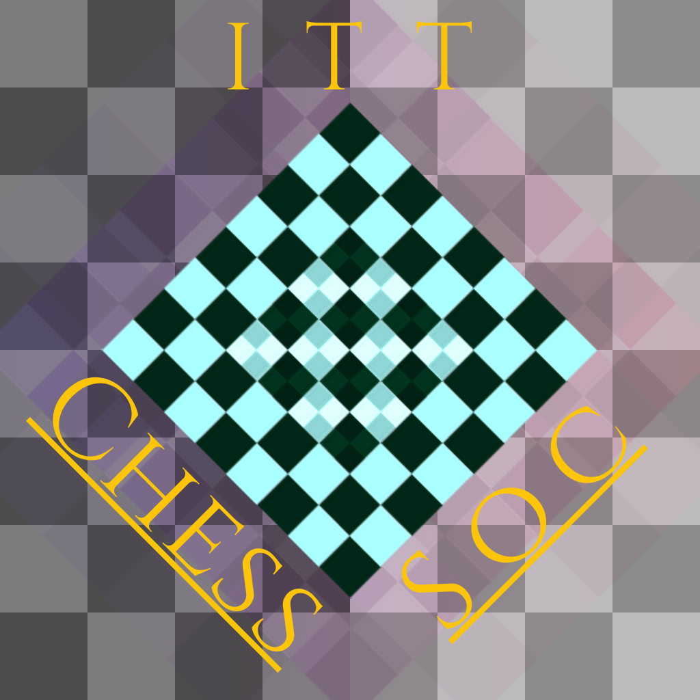
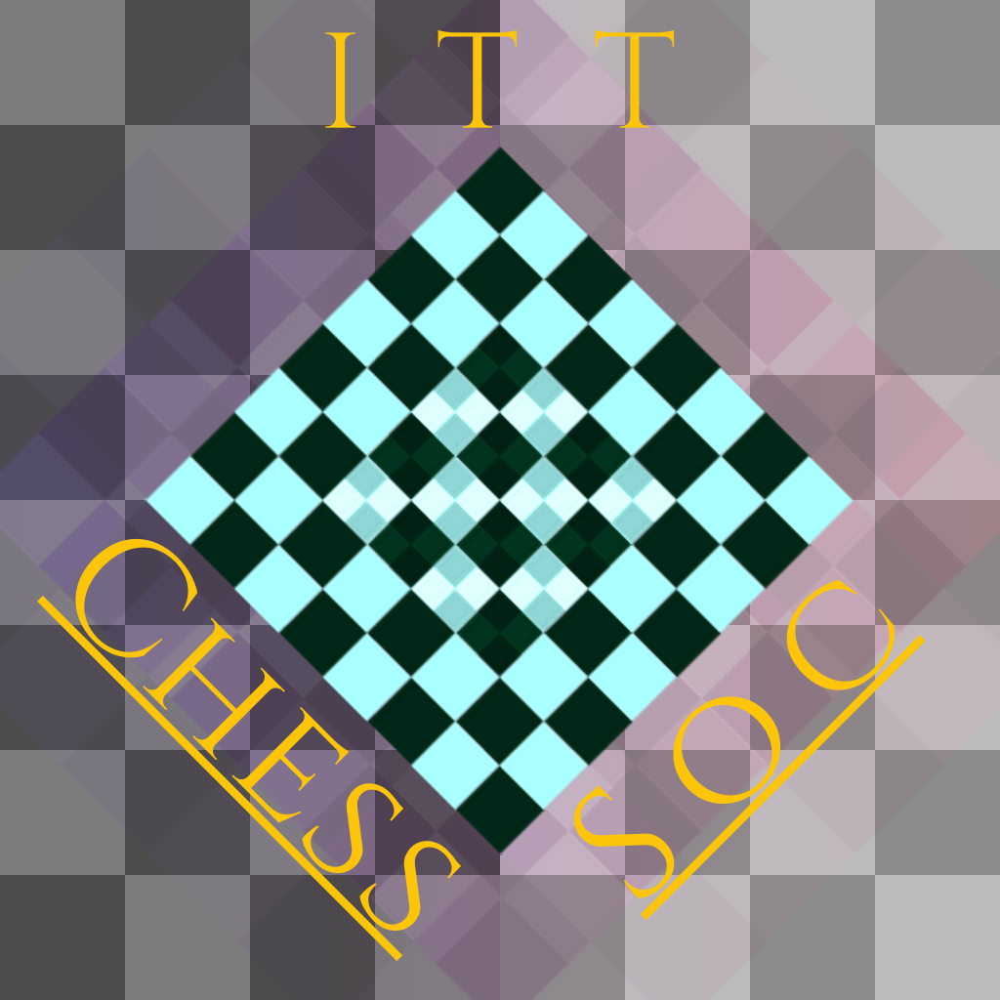

After getting inspired to take up some sort of digital art, as well as considering I had experience with poster design already and wanted to try a diferent style, I bought myself my first drawing tablet. In order to practice using it, I decided to do some project-based work with deadlines. I also decided to focus on Environment and Prop Design as that was what iintrigued me most at the time.
I realized that there where eight months left in the year and so I decided to create at least one Environment (and maybe prop) -focused piece every month for the last eight months of the year. The name was also partially insprired by the Endless Eight arc of the anime The Melancholy of Haruhi Suzumiya, hence Environment Eight.
